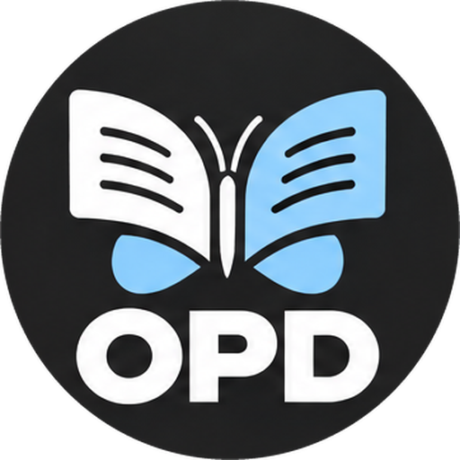
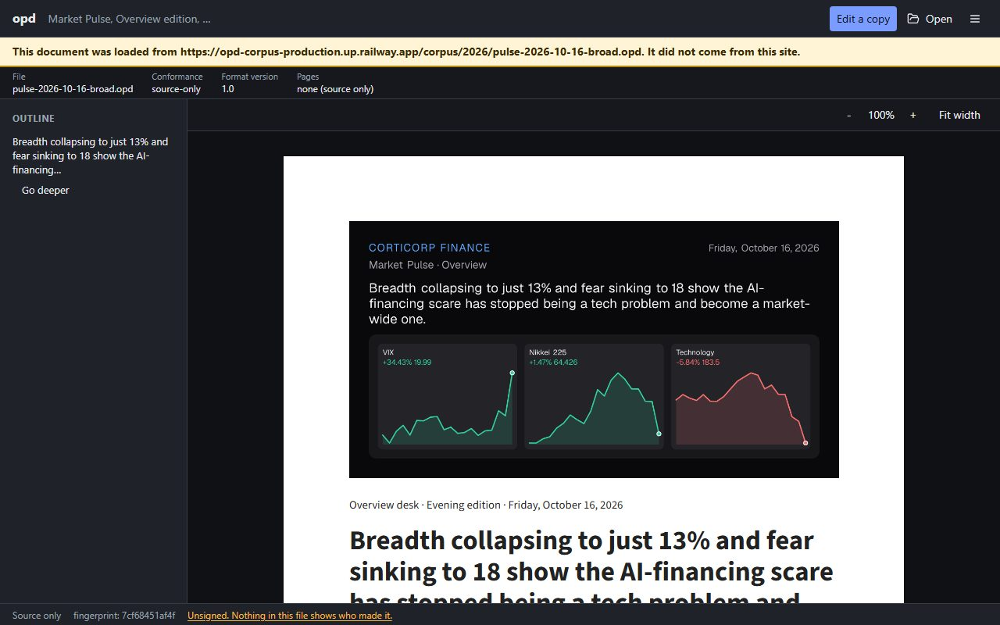
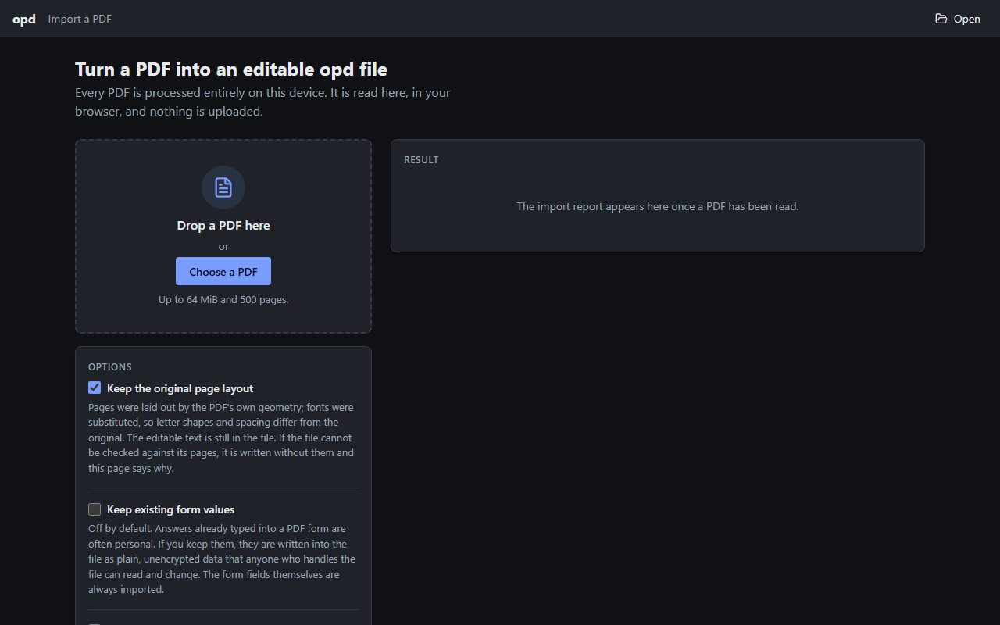
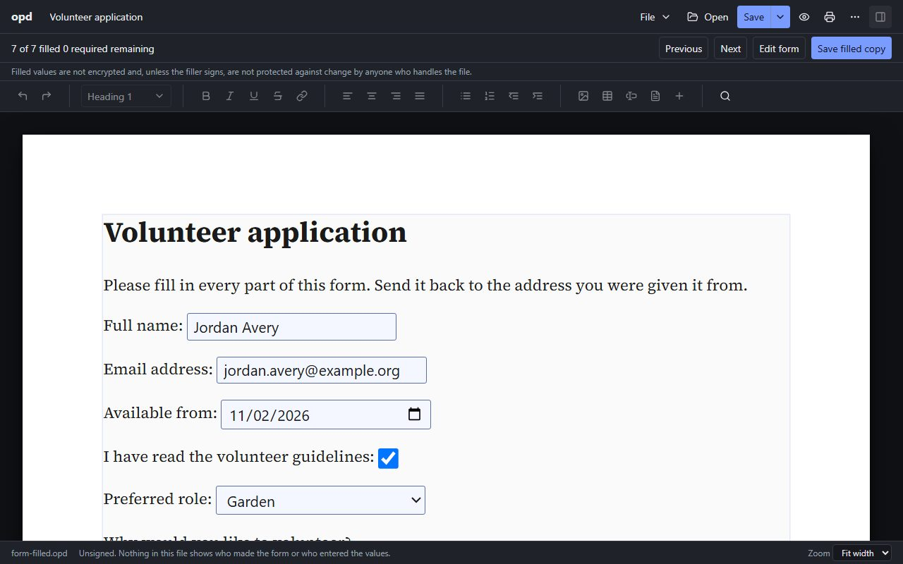
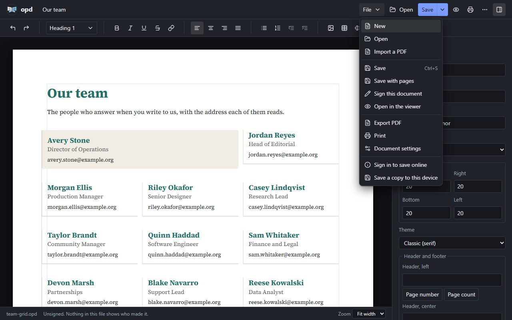
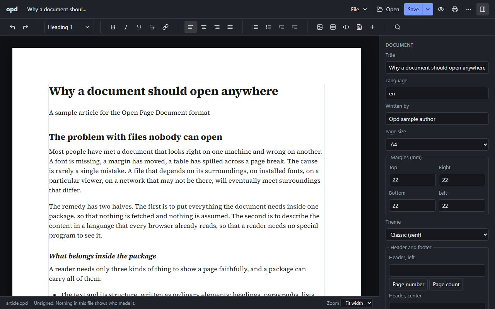
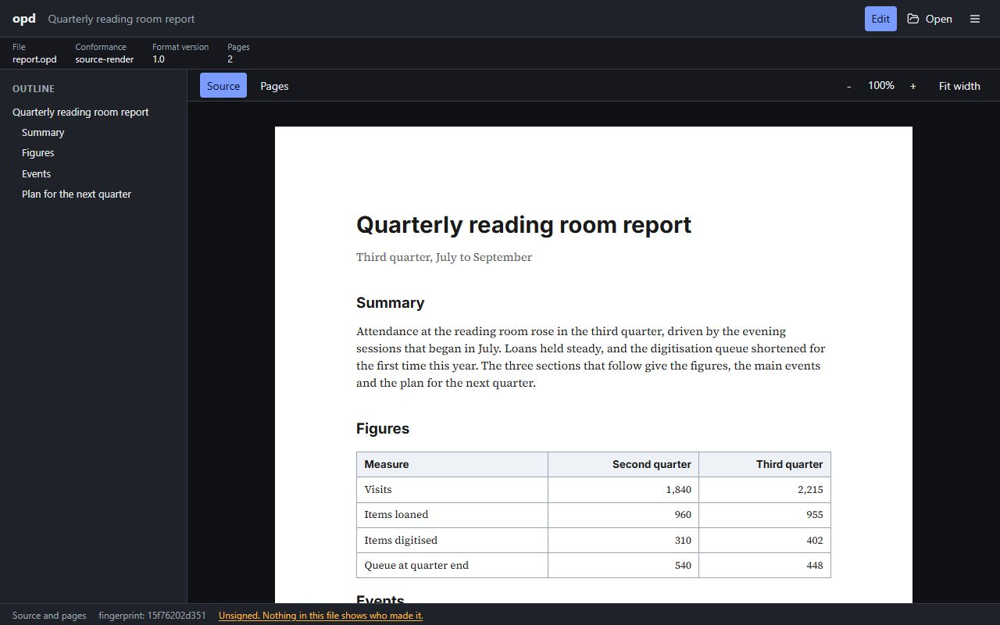
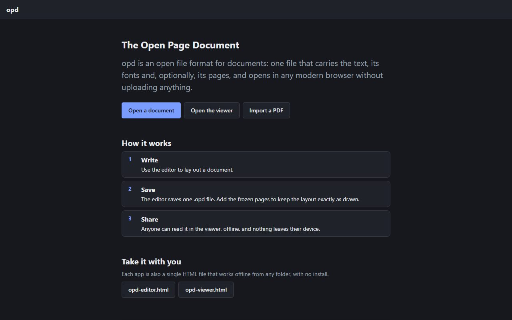

Pre-alpha, in active build

An open document format meant to replace PDF in the common case: showing a fixed, formatted document without the weight of the PDF toolchain. One .opd file is one zip. Inside it is a clean, reflowable source written in a strict subset of HTML and CSS, with no scripting and nothing loaded from outside the file; optionally a frozen copy of the exact pages, one SVG per page, for print and archive, bound to the source by hash; fonts as WOFF2; images; metadata; and a manifest that lists every entry with its SHA-256.
Nobody ships a single file that carries a validated reflowable source and a frozen page render bound to it by hash, under a signature that survives later user data. PDF gives you the frozen pages; the text, the structure, the form fields, and the question of whether a file that came back is the one you sent all take more work than they should. opd starts from the other end and keeps the pages too.



What it does
Source, frozen pages, fonts, images, metadata and a manifest with a SHA-256 for every entry, all in a single .opd file with the media type application/vnd.opd+zip. Nothing is fetched from outside the file and nothing in it can run a script.
The source is a strict subset of HTML and CSS, so it fits any screen. The optional frozen pages are one SVG each, for print and archive, and they are bound to the source by hash so a reader can tell the two belong together.
The source promises a stable structure. Pixel fidelity is claimed only for the frozen pages. If the two disagree the reader is told, and the tools never quietly pick one.
Every valid file opens editable with one standard toolbar. A form opens ready to fill inside the editor, and Edit form warns that it makes a new version. The editor can only produce valid files, because its schema is generated from the profile.
Form fields are declared separately from the text. Filling writes answers to a userdata area and leaves the author’s bytes unchanged, a form fingerprint shows the form came back unaltered, and a Collect view groups returned copies and exports CSV on the device.
Ed25519 signatures for the author and the filler. The wording is careful: a signature proves the holder of this key signed exactly these entries; it does not identify the holder. The tools never say “verified”.
Import keeps text, structure and AcroForm fields, and now the look as well: text colours, slide backgrounds, rules, card grids and column regions, and up to 40 named styles. Fonts the PDF names are matched to a pinned set of open-licence faces, never embedded from the PDF, and photos stay JPEG. On a 40-document ground-truth set: block F1 0.973, reading order 1.00, grids 5 of 5, tables 10 of 11, style match 0.98, form field recall 0.58.
Any document exports to a real PDF from the viewer, the editor or the command line, built from opd’s own page layout: selectable text in the document’s fonts, clickable links, accessibility tags, charts as vector shapes, and form fields that stay fillable with their answers. The PDF carries no scripts, and it says plainly that it does not carry the opd signature.
Format 1.2 adds card grids, gaps and rounded corners, and named paragraph and character styles. The editor keeps a file’s own stylesheet and fonts through every save, edits a style once for every place it is used, and inserts and reshapes grids. Visual order always matches reading order, by design.
The viewer (about 0.75 MB, PDF export included), the editor (about 1.6 MB) and the PDF import page (about 2.4 MB) are each one HTML file that runs from any folder, tested to make zero network requests. Documents render in a fully sandboxed frame with no scripts under a strict content security policy. On the hosted site, an optional passkey sign-in keeps documents online; registration is closed while it is tested.
Closer look

A team page laid out as a grid of cards, each with a name, a role and an address in the document’s own styles, with a rule under each card. The same layout is what PDF import now rebuilds from a slide deck. The File menu exports the page to PDF, saves it with frozen pages, or signs it.

One toolbar for every file. The Document panel holds the title, language, author, page size, margins, theme, header and footer. Tables, footnotes, a table of contents, page numbers, and custom and landscape page sizes are all there, and whatever comes out is a valid file, because the editor cannot write anything else.

The Source tab reflows; the Pages tab shows the frozen pages. The footer reports the fingerprint and the signing state plainly. For an unsigned file it says: Unsigned. Nothing in this file shows who made it.

Open a document, open the viewer, or import a PDF. The same page offers opd-editor.html and opd-viewer.html as downloads, each a single file that works offline. The hosted app can also install itself and register to open .opd files.
How it was built
opd was built in five days, October 16 to 20, 2026, in about 280 commits and 94 pull requests, by a Board of Claude Code subagents: a System Architect, an AI Architect, a Security Expert and a Software Engineer. Only the Engineer writes code, in branches with pull requests, and a hook blocks it from merging. The architects and the Security Expert read and propose; the operator merges.
The gates are the same on every change: more than 2,600 unit tests, Playwright runs in Chromium, Firefox and WebKit, and axe accessibility checks held at zero findings. The single-file tools are tested to make no network request at all.
There is a real corpus to open. Every Corticorp Finance Market Pulse edition is re-exported to .opd every six hours, 51 editions by October 17, and served with open CORS so the viewer can open one by link.
Status
The specification is at v0.1 and still in progress. The items below are known and not yet done.
Closed on October 19 and 20: format 1.3 (flex and multi-column text, gradients, per-page backgrounds), a font, size, colour and highlight toolbar, a menu bar with one Open and one Save, PDF import of a grid beside a table and of pale dividers on dark slides, PDF forms without fillable fields, PDF export from Safari, and the remaining specification chapters.
The repository stays private for now, and the project is an experiment that may or may not continue. The specification is licensed CC BY 4.0 and the code MIT.